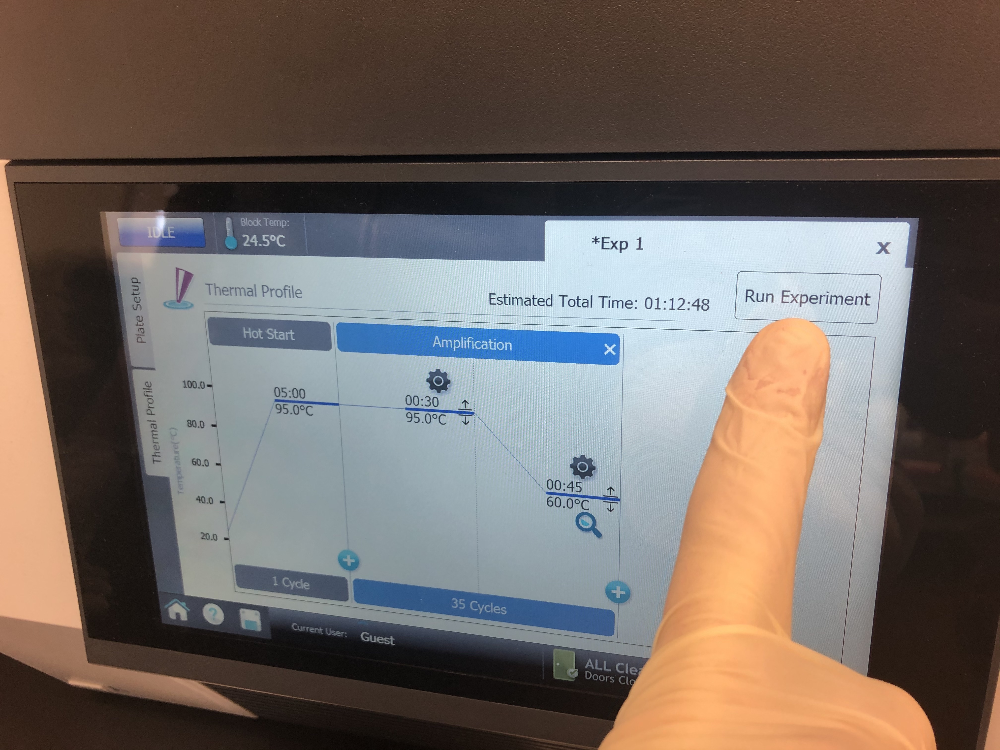
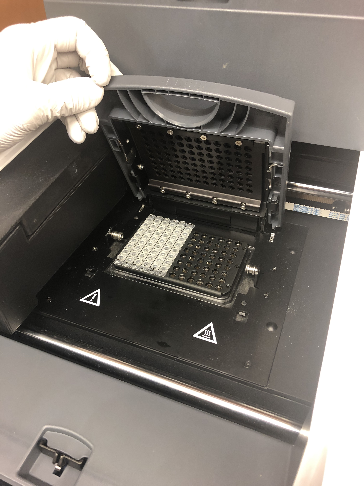
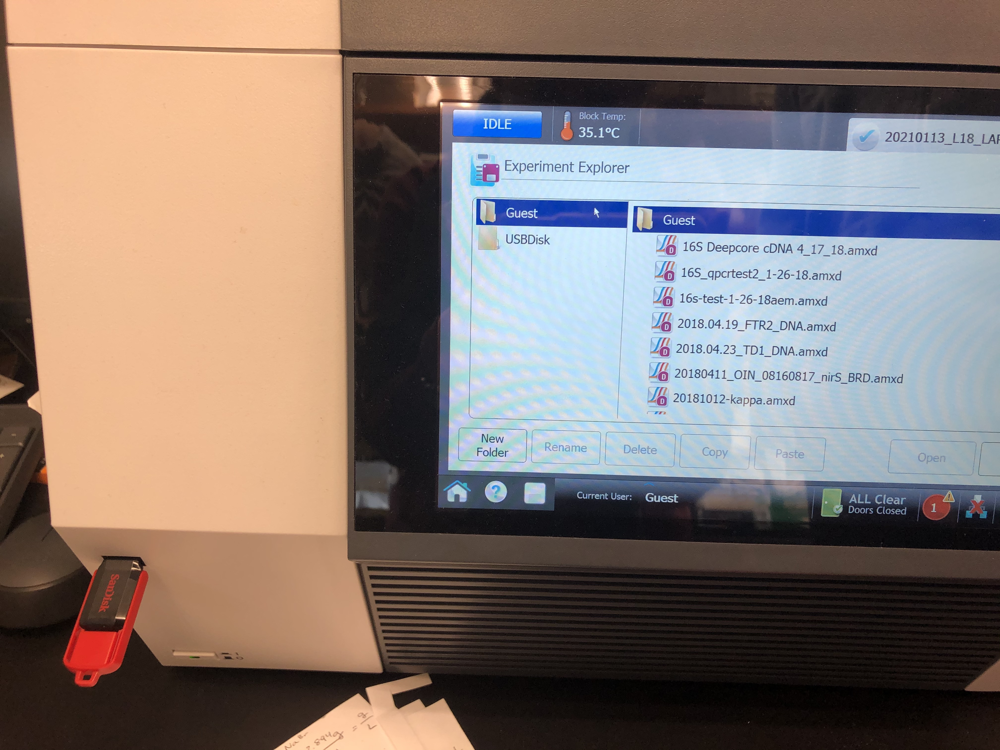

Library Quantification
qPCR Protocol - Library Quantification
The qPCR machine is located in the Bowen Lab. Please coordinate with their lab before using the machine. This protocol is used to quantify the amount of each of your libraries that will be sequenced by the sequencer. Quantifying by other means will tell you how much dsDNA you have in your library, but the qPCR will tell you how much library was successfully amplified and how much will be read by the sequencer. You should run each sample in triplicate on the qPCR to minimize error in these measurements especially when pooling samples for sequencing.
What you need before you start
Kit: KAPA Library Quantification Kit (Universal) (Cat #: KK4923)
Specific strip tubes & caps: Agilent AriaMx 96 Tube Strips (Cat #: ) & Agilent Optical Cap, 8x Strip (Cat #: )
Make a stock of 10 mM Tris-HCl + 0.05% Tween-20 (optional but recommended for the dilution of library DNA, as it leads to improved accuracy by reducing the adherence of DNA to plastic surfaces)
Copy of KAPA Protocol Found here
Ensure qPCR reagents are thawed and properly mixed. If the kit is new, the 2X KAPA SYBR-FAST qPCR Master Mix (5mL) should be combined with 1 mL 10X Illumina Primer Premix and then aliquoted out. These should be labeled with the date it was mixed because once mixed the reagent is only good for (60 days double check that timeframe).
1.5 mL microcentrifuge tube per library
Previously quantified libraries and their concentrations
Turn on qPCR machine (needs some time to warm up so turn on before you start setting up your reactions)
Step 1: Make library dilutions
- Libraries need to be diluted to be read on the QPCR machine. All dilutions should be done in 10 mM Tris-HCl + 0.05% Tween-20. First dilute sample to a 1:1000 concentration in a 1.5mL microcentrifuge tube (Table 1).
Table 1:
| Reagent | Amount |
|---|---|
| 10 mM Tris-HCl + 0.05% Tween-20 | 999 uL |
| Library dsDNA | 1 uL |
| Total | 1000 uL |
- Next dilute your sample libraries to ensure they fall within the range of the standards provided by the KAPA kit (Table 2). Typically for a library in the range of 1-200 ng/uL you need a 1:18000 dilution to be read on the QPCR machine. However, you can use the calculation below to determine what you need to dilute your undiluted library down to:
Calculation 1 - determining library concentration in pM:
Calc 1: (Undiluted Library Conc. (ng/uL)/ (617.9 g/mol * fragment size of library)) * 10^6 = undiluted library in nM
Calc 2: undiluted library in nM * 1000 = undiluted library in pM
Calc 3: dilute final library to be in the range of the standards in Table 2
Table 2:
| Standard Name | dsDNA concentration (pM) | |—————|————————–| | Standard 1 | 20 | | Standard 2 | 2 | | Standard 3 | 0.2 | | Standard 4 | 0.02 | | Standard 5 | 0.002 | | Standard 6 | 0.0002 |
Step 2: qPCR setup
qPCR reactions for the six standards and each library dilution should be set up in triplicate. Load each well of the qPCR strip tubes as indicated below in Table 3, for a total reaction volume of 20 uL. Below is an example set up when running 8 libraries in triplicate (Table 4).
Note: you can not label the individual tubes. Make sure you pay attention to your strip tube orientation and order. Tip: Always put the “A” side of strip tude on top and label each strip tube tap with the numbers 1 - # of strip tubes. Have a key in your notebook to what each of those strips contain. When you are doing a lot of these it is easy to mix up what was in what tube.
Note: mix contents of each reaction very well by pipetting up and down ~20 times.
Table 3: qPCR reaction setup
| Reagent | Amount | |—————————————————|——–| | KAPA SYBR FAST qPCR Master Mix containing Primers | 12 uL | | PCR-grade water | 4 uL | | Diluted dsDNA library dsDNA Standard (1-6) | 4 uL | | Total | 20 uL |
Table 4: Example set up for 6 samples in triplicate
| | 1 | 2 | 3 | 4 | 5 | 6 | |—|——|——|——|——-|——-|——-| | A | Std1 | Std1 | Std1 | Samp1 | Samp1 | Samp1 | | B | Std2 | Std2 | Std2 | Samp2 | Samp2 | Samp2 | | C | Std3 | Std3 | Std3 | Samp3 | Samp3 | Samp3 | | D | Std4 | Std4 | Std4 | Samp4 | Samp4 | Samp4 | | E | Std5 | Std5 | Std5 | Samp5 | Samp5 | Samp5 | | F | Std6 | Std6 | Std6 | Samp6 | Samp6 | Samp6 | | G | Blk | Blk | Blk | Samp7 | Samp7 | Samp7 | | H | | | | Samp8 | Samp8 | Samp8 |
Ensure that the qPCR plate is sealed.
Collect all components in the bottom of the well by brief centrifucation.
Step 3: Using the qPCR machine
Take final reaction strip tubes to the Bowen lab for use on the qPCR machine.
Turn on the power button in the bottom left hand corner. This will take a few minutes because the machine runs self diagnostics when booting up.
On the home screen, click “Quantitative PCR Fluoresence Probe”

- The first screen that will pop up is your plate set up. Here click the top left corner of the plate to select all wells and in the bottom right corner change the dye from “FAM” to “SYBR”. This updates all wells to have the correct dye information for your run.

- Next for each well make sure to label as either a “Standard” well, “NTC” (no template control) well, or “Unknown” well. For example, to do this for standards, highlight all cells that are locations of standards and move to the top right corner dropdown menu called “Well Types” and set it to standard. You can click and drag to highlight multiple locations in a row or just click on all the cells individually. You can always deselect by clicking that cell again or deselect everything using the top left corner square.

- Next click on the left tab that says “Thermal Profile” and set the specifications for your run (Table 5). You do this by clicking any value (e.g., time or temperature) and manually editing the values as shown in the image below.

Table 5:
| Step | Temperature | Time | Cycles | |————————————–|————-|——–|——–| | Initial activation/denaturation | 95C | 5 min | 1 | | Denaturation | 95C | 30 sec | 35 | | Annealing/extension/data acquisition | 60C | 45 sec | * |
The denature and annealing steps are both run together for 35 cycles. Markdown tables are frustrating and you can’t merge cells of a table. See the image at the bottom of this section for clarification. Once the specifications are set properly, place the tubes in the qPCR machine and click “Run Experiment”.


Step 4: Analyzing output data
To analyze the output you have to use the AriaMx program located on the Bowen laptop that is typically plugged into the tapestation in the Shared Molecular Space.
First use the red flash drive (pictured below) to get your data off of the qPCR machine. Only this flash drive works (not sure why?).

- Then shut down the qPCR machine and take the flash drive to the tapestation computer. Here you should open the Agilent Aria program to see your data.

- Once the program opens a similar table to what you saw on the qPCR machine will open. Standard cells will be a redish pink color, sample cells blue and no template control green. For the standard cells you need to manually enter each value into the program. This is done by highlighting one cell and moving to the properties tab on the right side panel. Then in the standard quantities section place the value of that standard in the “Amount” field and change the Units field to picograms. These values will correspond to the order you put your ladder in and are the values in Table 2. Double check all inputs once you complete all your standard wells then you are ready to view your results.

- Highlight all cells then move to the “Graphical Displays” to inspect your amplification plots and where your samples fall on your standard curve. You can do a visual inspection here to ensure your samples fall within your standards, but you need to export your Cq values to determine actually concentrations of your samples.

- To export your Cq values make sure all samples are highlighted in the right hand column. Right click and select “export to excel”. Save your excel file to a hard drive and take it to your personal computer.